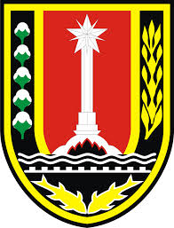

|  |
DEWAN PERWAKILAN RAKYAT DAERAHKOTA SEMARANGAlamat: Jl. Pemuda No. 146 Telp. (024) 3556335 Psw. 1211 Fax. (024) 3547146 Semarang 50132 |
Yang bertanda tangan bawah ini menerangkan bahwa:
| 1. | KADAR LUSMAN, SE | : | Ketua Komisi “C” DPRD Kota Semarang; |
| 2. | ERRY SADEWO, SH | : | Wakil Ketua Komisi “C” DPRD Kota Semarang; |
| 3. | Ir. WACHID NURMIYANTO | : | Sekretaris Komisi “C” DPRD Kota Semarang; |
| 4. | R. YUWANTO | : | Anggota Komisi “C” DPRD Kota Semarang; |
| 5. | H. DIBYO SUTIMAN, SH | : | Anggota Komisi “C” DPRD Kota Semarang; |
| 6. | R. YUWANTO | : | Anggota Komisi “C” DPRD Kota Semarang; |
| 7. | NUNUNG SRIYANTO, SH, MM | : | Anggota Komisi “C” DPRD Kota Semarang; |
| 8. | R. YUWANTO | : | Anggota Komisi “C” DPRD Kota Semarang; |
| 9. | H. DIBYO SUTIMAN, SH | : | Kepala Sub Bagian Pemberitaan pada Bagian Hubungan Masyarakat Sekretariat DPRD Kota Semarang; |
| 10. | R. YUWANTO | : | Staf Sub Bagian Tata Usaha dan Kepegawaian pada Bagian Umum Sekretariat DPRD Kota Semarang; |
| 11. | BAGUS SANTOSO, S.STP, MM. | : | Staf Sub Bagian Persidangan pada Bagian Persidangan dan Perundang-undangan Sekretariat DPRD Kota Semarang; |
Melaksanakan perjalanan dinas:
| Berangkat | : | Kamis, 25 Januari 2018 |
| Kembali | : | Sabtu, 27 Januari 2018 |
| Tempat | : | Pemerintah Kota Balikpapan |
| Keperluan | : | Melaksanakan Pendampingan Kunjungan Kerja Dinas Lingkungan Hidup Kota Semarang tentang Penyusunan Rencana Aksi Daerah Adaptasi Perubahan Iklim (RAD-API). |
Demikian Surat Jalan ini dibuat untuk dipergunakan seperlunya.